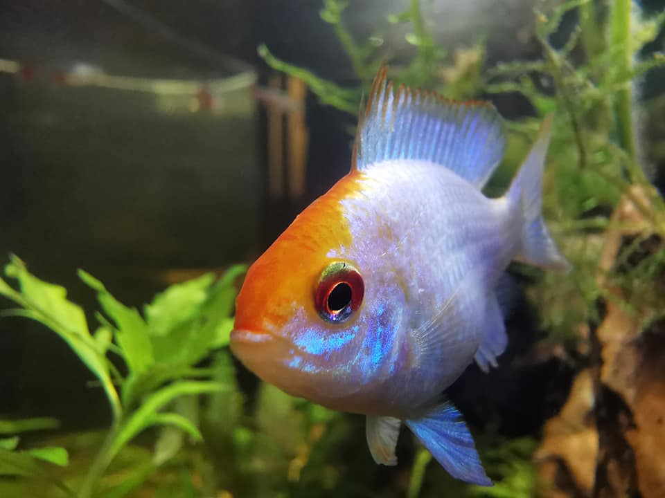
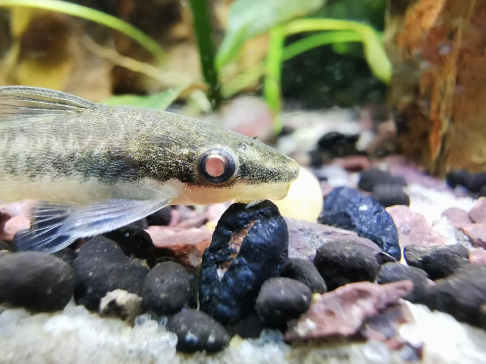
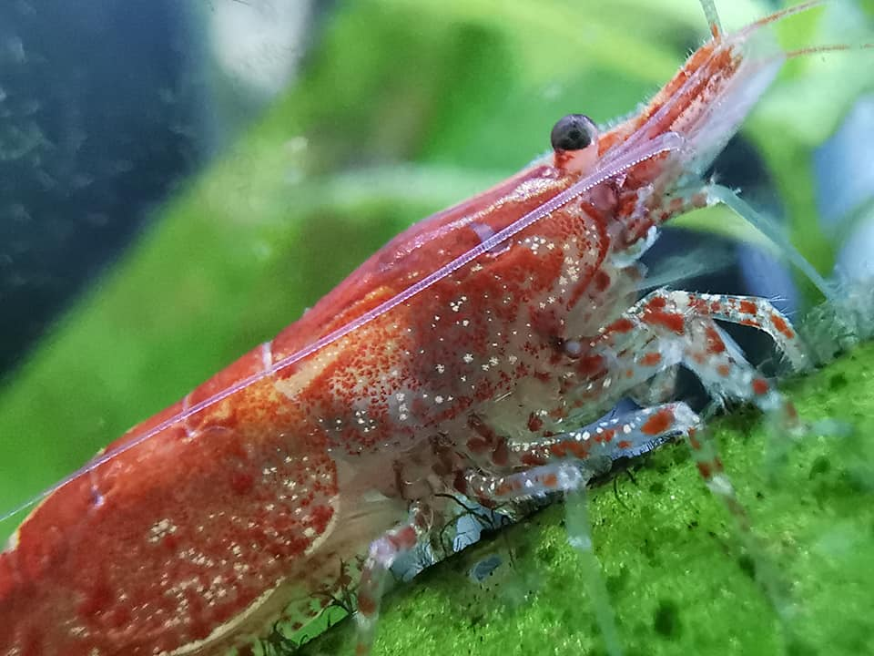
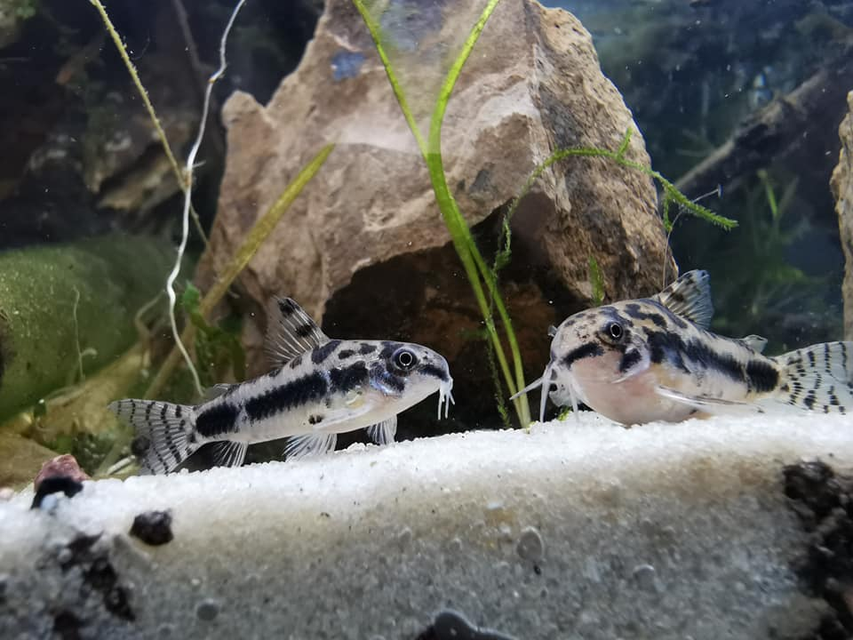
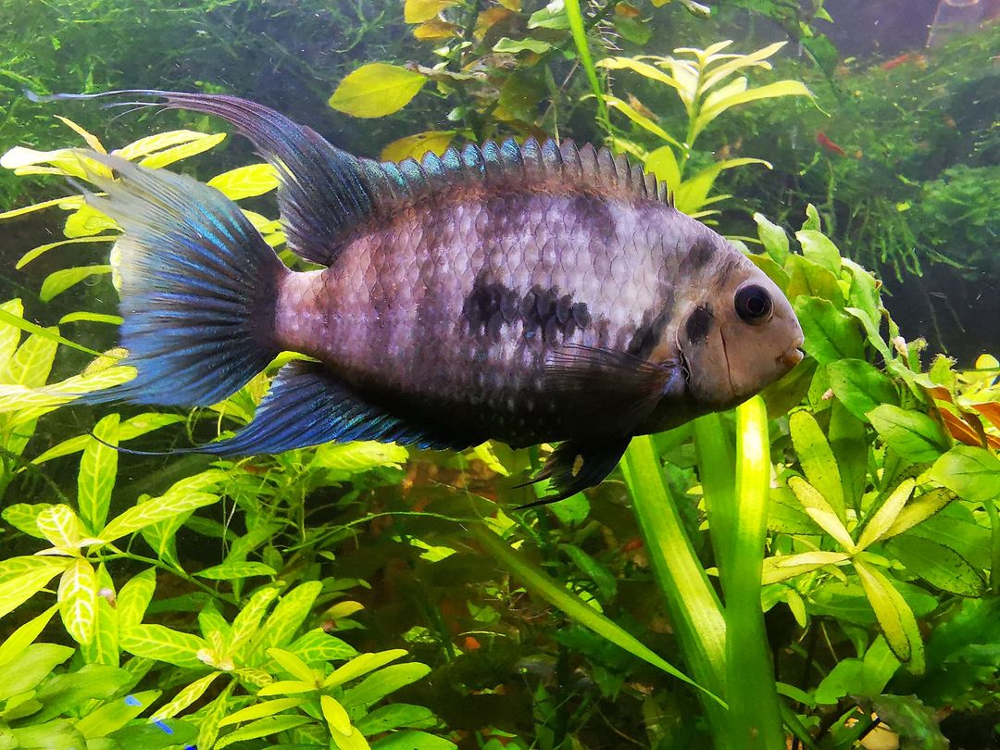

Daves Fish Room
A Fishy Time!

Blue Acara
he blue acara is a very colorful freshwater fish in the Cichlid family. This fish can be found in various freshwater habitats, ranging from standing water to flowing streams, in Venezuela and Trinidad.

Otocinclus
Otocinclus is a genus of catfish in the family Loricariidae native to South America.

Neocaridina Shrimp
Neocaridina davidi is a freshwater shrimp from Taiwan which is commonly kept in aquaria.

Corydoras habrosus
The Salt and Pepper Cory (Corydoras habrosus) is one of the three pygmy corydoras species.

HRP/Hybrid Cichlid
The Honduran Red Point (Archocentrus sp. "honduran red point") is a fish species, endemic to the Rio Danli. The Honduran Red Point is relatively peaceful in comparison to the Convict Cichlid (Amatitlania nigrofasciata).